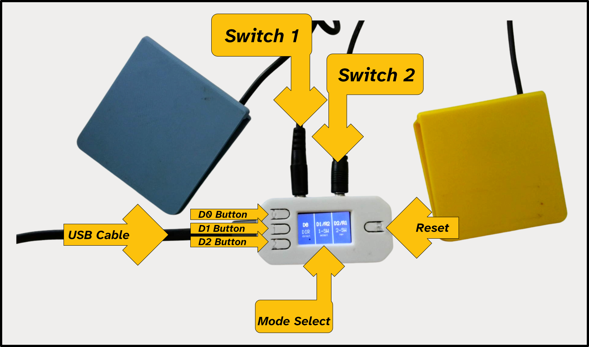

Step-by-step guide
Build Instructions
Everything you need to assemble, wire, and install firmware. Once it’s built, see Use It for how to operate it.
Step 01
Build Instructions
Step 02
Video Walkthrough
Watch the full build from parts to first power-on.
-->
Step 03
Check It Works
- Connect the board to a computer with a USB-C data cable. A drive called
CIRCUITPYappears. - Make sure
code.pyis in the root ofCIRCUITPY, along with thelibfolder. - The screen shows the mode-select screen with three zones: D0, D1 / A2 and D2 / A1.
- Plug a switch into each jack and click it. The device should enter a mode and show a shortcut symbol.

Your switch interface is built. Head to the Use It guide to choose a mode, learn the controls and customise shortcuts.